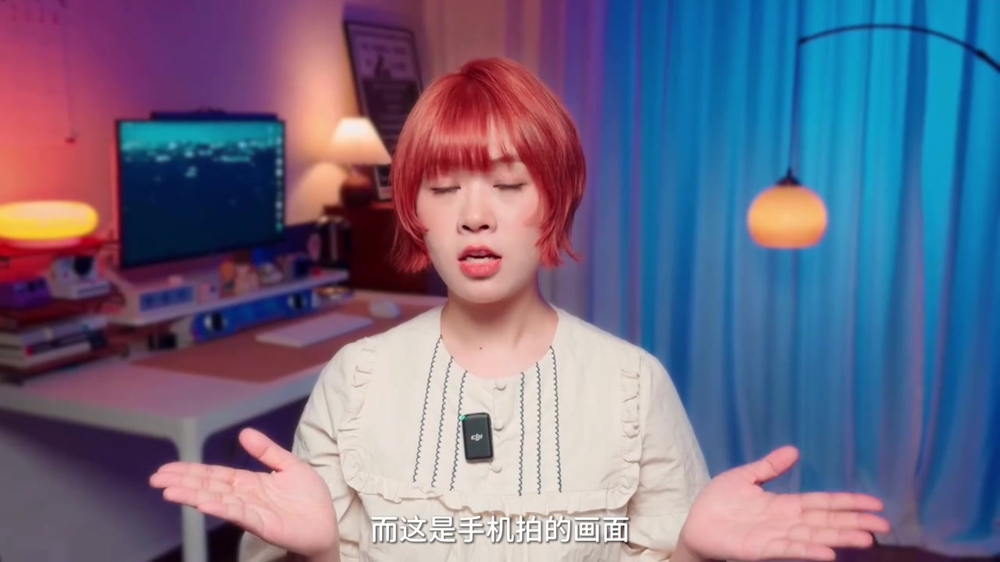
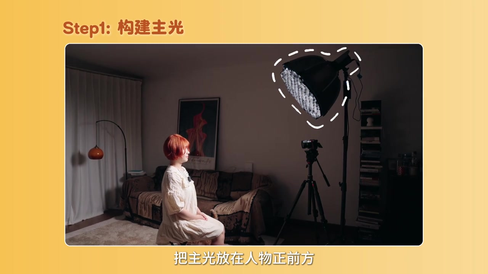
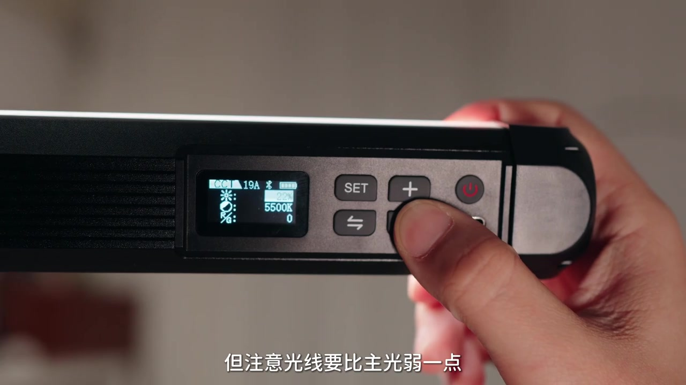
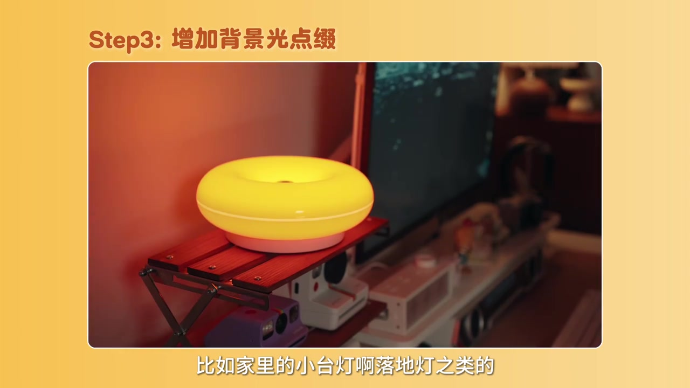
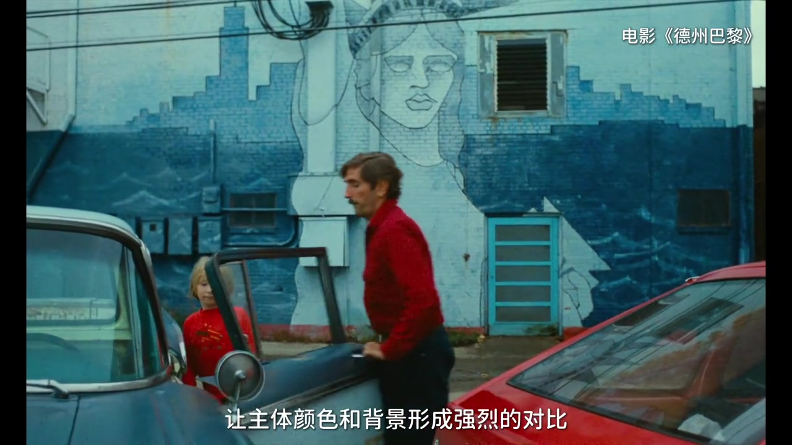
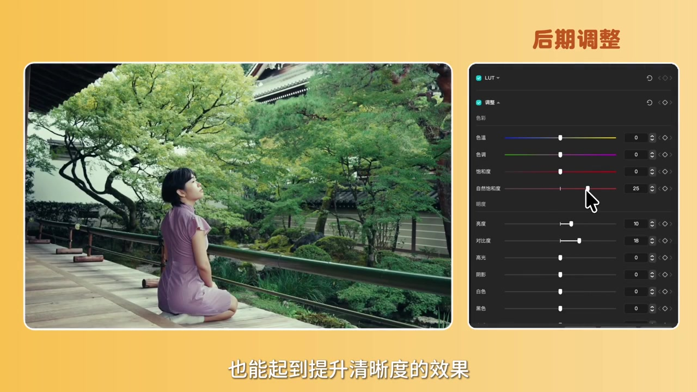

开场：别急着换相机
作者先并置两段画面：一边说「这是相机拍的」，一边说「这是手机拍的」，观感却像相机更糊。观众心里立刻冒出「该换相机了」——她马上打断：并非如此。
「在换相机之前，先来认识一下对画面清晰度起决定性作用的元素——光。」
说明：Whisper 后文偶发把「清晰度」识成「轻视度/轻稀度」、「口播」识成「口薄」、「虚实对比」识成「叙时对比」。叙述按语境与字幕校正；末尾转录区仍完整保留原始分段。

光是表层，明暗对比才是底层
太暗会噪点重、细节糊；但只把整屋打亮也会「光线太平」，没有视觉重心，观感仍不够清晰。接着她给出对照：当主体从环境中凸显出来，画面立刻「清晰」许多。
「所以光是表层原因，而光所带来的明暗对比，才是最底层的原因。」
万能打光公式：主光、辅光、背景点缀
设问「光到底怎么打才好看」后，作者给出三步公式。
第一步，构建主光：主光放在人物正前方，从上往下约 45 度。脸上形成蝴蝶形高光，脸颊两侧阴影更显瘦、更立体——早期好莱坞女演员常用的蝴蝶光，也叫美人光。

第二步，添加辅光：用灯棒或反光板给阴影补一点光，暗部不要死黑，但辅光必须弱于主光。

第三步，背景光点缀：在背景放小台灯、落地灯等，让人物边缘与背景分离，氛围感更强。

色彩对比：主体与背景拉开色差
既然明暗对比能抬清晰度，色彩对比同样可用。作者举例电影《德州巴黎》里红衣主体对蓝色墙绘，并分享自己拍口播时用灯棒给窗帘打蓝光，与屋内暖光对冲，让画面更有质感。
「让主体颜色和背景形成强烈的对比，来塑造人物形象。」

虚实对比：大光圈让主体更跳
大光圈拍人更好看，原理同类：光圈越大，虚实对比越明显，主体更突出。视频用左右分屏对照不同光圈下的背景虚化程度。
后期拉对比，再守住导出参数
前期之外，也可在后期手动拉曝光、对比度和饱和度来增加画面对比。作者演示剪辑软件调整面板（如自然饱和度、亮度、对比度），并称做完这一步，视频清晰度已经能「打到 90% 的人」——这是她的经验性判断，不是可核验的统计。

但导出参数不对也会伤画质：前期尽量拍 4K，方便二次构图；导出选 H.264、最高码率。收尾欢迎评论，下期再见。
「这些做完后，你就可以收获一支清晰有质感的视频啦。」